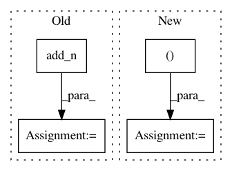

4580d28f9cc8f846ee6fb42dda6909a98797fcd9,nara_wpe/tf_wpe.py,,perform_filter_operation,#Any#Any#Any#Any#,166
Before Change
filter_matrix_conj[tau_minus_delay, :, :],
Y[:, (K - 1 - tau_minus_delay):(T - delay - tau_minus_delay)]
))
reverb_tail = tf.add_n(reverb_tail)
return tf.concat(
[Y[:, :(delay + K - 1)],
Y[:, (delay + K - 1):] - reverb_tail], axis=-1)
After Change
filter_matrix_conj[tau_minus_delay, :, :],
Y[:, (K - 1 - tau_minus_delay):(T - delay - tau_minus_delay)]
)
reverb_tail = tf.foldl(
add_tap, tf.range(0, K),
initializer=tf.zeros_like(Y[:, (delay + K - 1):])
)
return tf.concat(
[Y[:, :(delay + K - 1)],
Y[:, (delay + K - 1):] - reverb_tail], axis=-1)
In pattern: SUPERPATTERN
Frequency: 3
Non-data size: 4
Instances
Project Name: fgnt/nara_wpe
Commit Name: 4580d28f9cc8f846ee6fb42dda6909a98797fcd9
Time: 2018-05-16
Author: heymann@nt.upb.de
File Name: nara_wpe/tf_wpe.py
Class Name:
Method Name: perform_filter_operation
Project Name: reinforceio/tensorforce
Commit Name: b0fd7d13ff1392c60dfef432bfea7a7dd035f71f
Time: 2017-07-29
Author: aok25@cl.cam.ac.uk
File Name: tensorforce/models/vpg_model.py
Class Name: VPGModel
Method Name: create_tf_operations
Project Name: reinforceio/tensorforce
Commit Name: b0fd7d13ff1392c60dfef432bfea7a7dd035f71f
Time: 2017-07-29
Author: aok25@cl.cam.ac.uk
File Name: tensorforce/models/dqfd_model.py
Class Name: DQFDModel
Method Name: create_tf_operations